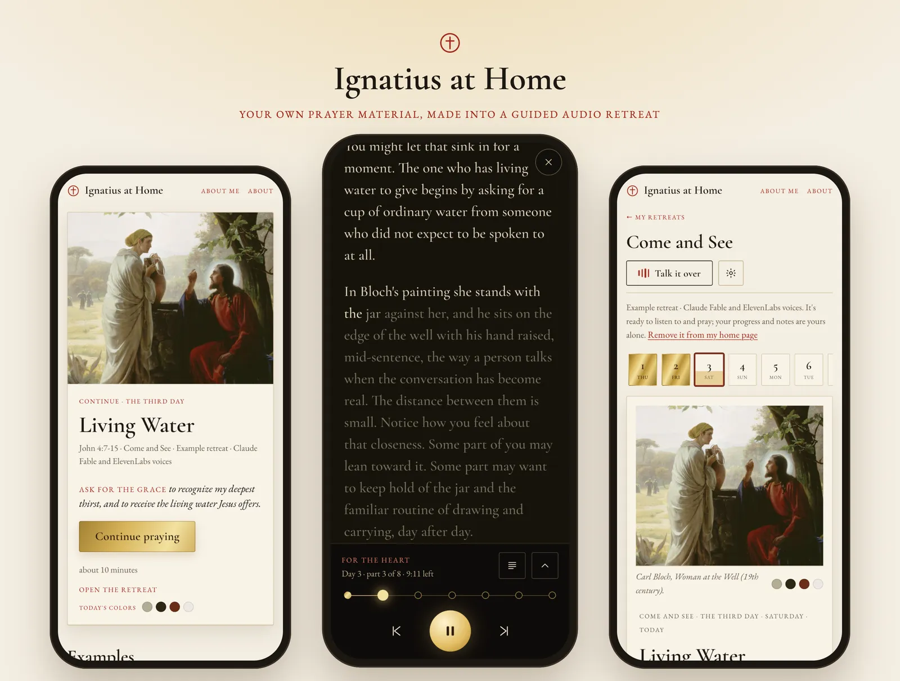
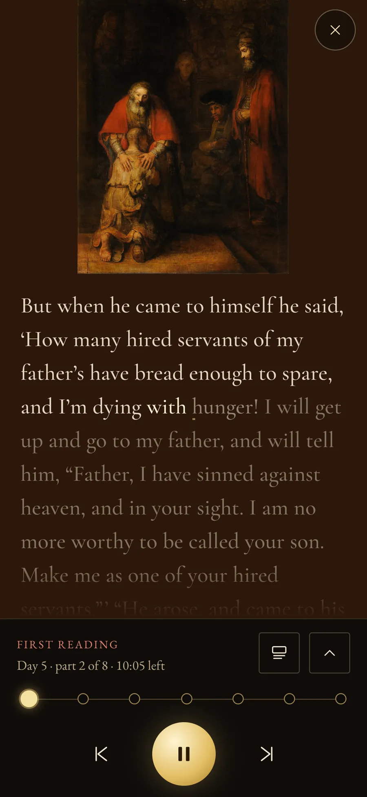
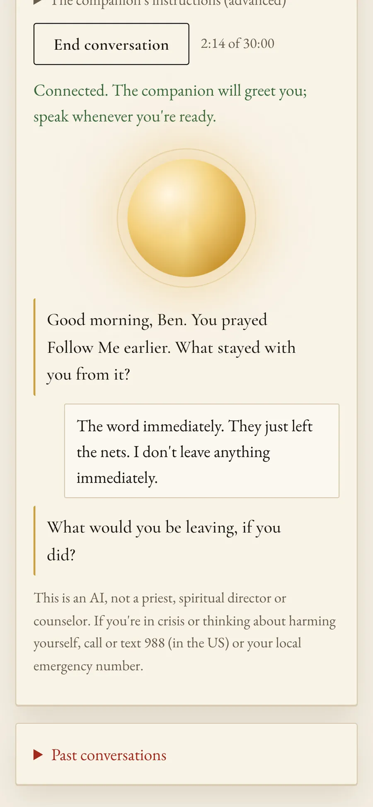
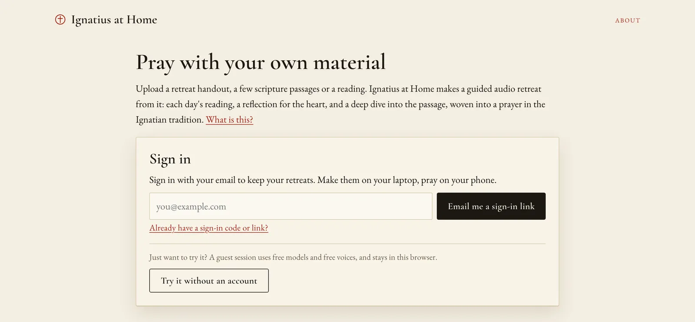
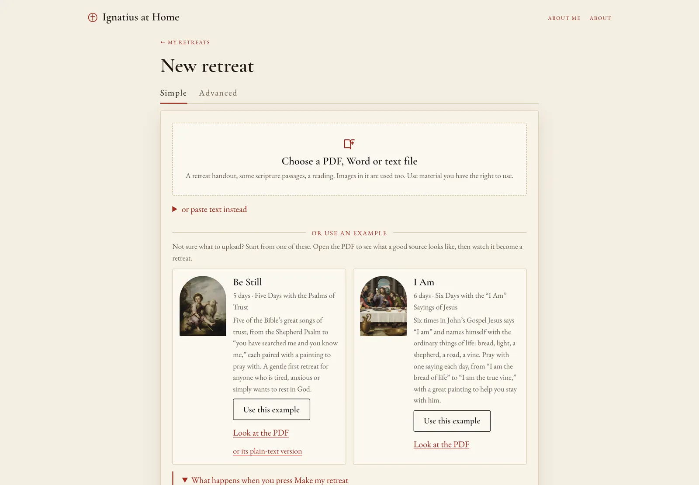
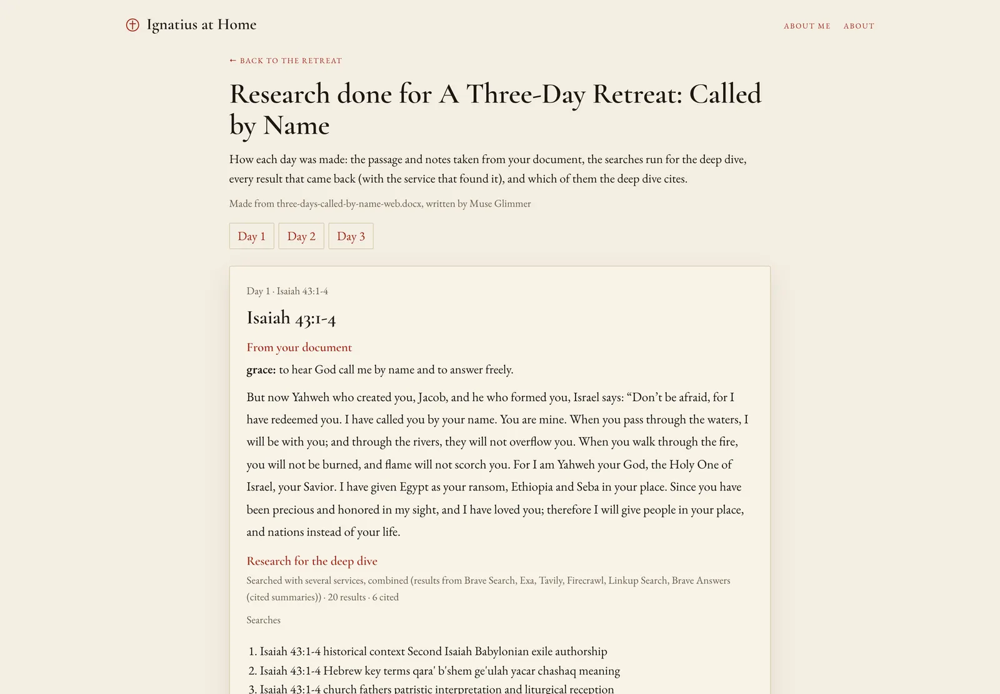
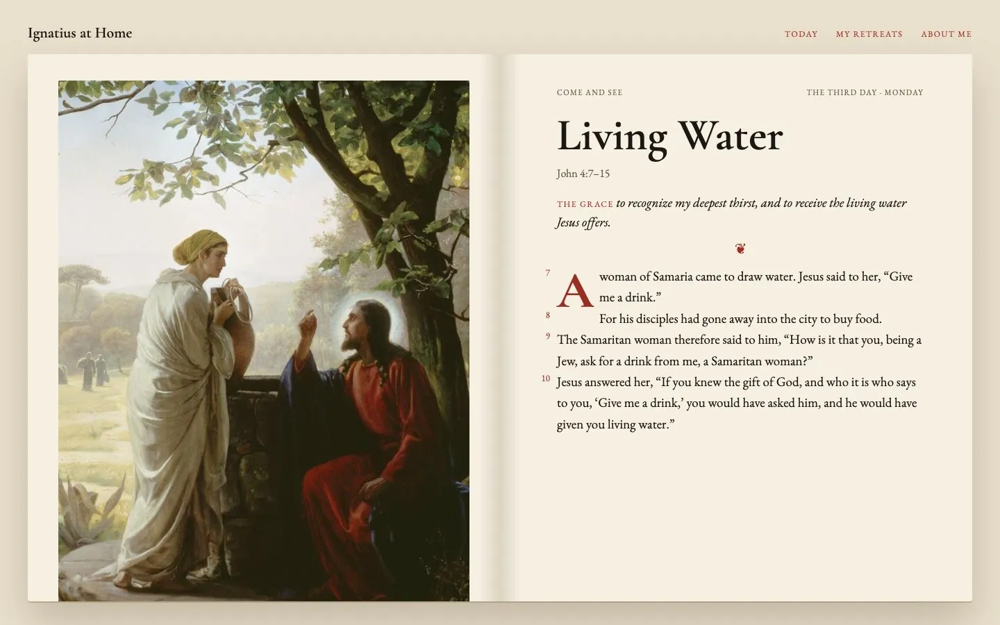
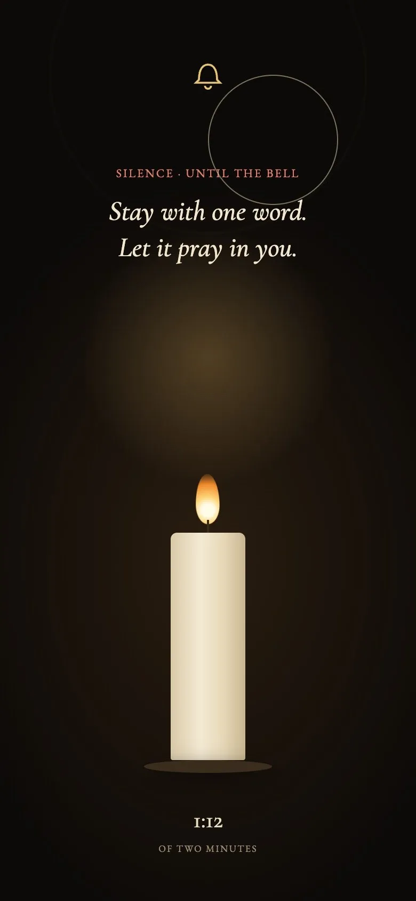

Web app · September 2026
Ignatius at Home

Python, FastAPI, Claude Code, Claude, ElevenLabs, Supabase, Render
A meditation app that turns reading material, such as a handout, a few passages, or just an idea like "seven days on a theme", into a guided audio series listened to one day at a time. Each day pairs a reading with a slow, repeated listening, a short reflection, some background on the text, a stretch of quiet between two bells, and a painting to sit with. I built it for Effective Coding with AI, a Carnegie Mellon course, as the course's server-side project on Render.
Try it Source, screenshots, and prompt log on GitHub Backend and architecture The original design spec
What it is
Ignatius at Home turns prayer material you already have into a guided audio retreat you can pray at home, one day at a time. You upload a retreat handout, a few passages of scripture, or a reading with a painting, and press Make my retreat. About twenty minutes later a series of days is waiting.

Each day follows lectio divina, the old monastic way of praying slowly with scripture. You ask for the day's grace and hear the passage four times, each with a different focus. Between the readings come a short reflection "for the heart" and a deep dive into the passage's history and how the church has read it. Then silence between two bells, and a closing prayer in your own words. On a phone, the day's painting fills the screen while you listen.




The idea came from my own prayer life. I pray with a parish retreat in daily life, a months-long walk through the Spiritual Exercises of Saint Ignatius, with a printed handout each week. Praying from paper at 6 a.m. is hard. I wanted someone to read the passage to me slowly, several times, offer a short reflection, tell me what scholars know about it, and then leave me in silence.
Talk it over is a live spoken conversation about the retreat, modeled on how spiritual directors listen: mostly questions, very little advice. It says plainly that it is an AI and not spiritual direction.

A tour
Making a retreat is one button. Models, voices, and every prompt and line of spoken guidance sit under an Advanced tab, and nothing there is required. On a computer, a research page shows every search behind a day's deep dive, every result, and which ones were cited.




How I built it
I built this for Homework 4 of Effective Coding with AI (CMU 15-113), which asks for server-side code on Render with a web front end. The backend is Python and FastAPI on Render, with Supabase for sign-in, the database and private files. The front end is plain HTML, CSS and JavaScript on GitHub Pages. I built it in Claude Code with Claude Opus 5.5. Claude Fable 5.1 did a design review and rewrote the app's prompts, and Claude Design made the redesign mockups. Every prompt I typed, 283 in all, is in the prompt log.
It started as a spec. I had written a design spec, a technical spec and a build plan for a native iPhone app, and for the class I reshaped that into a web app anyone can use with their own material. Then the work went in phases, each against a written document:
- A spec-driven revision. Claude Fable reviewed the working app and wrote a redesign spec, and the app was rebuilt to it.
- A Clean Code cleanup. A 2,391-line `app.js` became thirteen scripts, one per view.
- A visual redesign. The second look used the defaults of AI-built startup sites: violet gradients, the Inter font, frosted glass. The new direction is a modern book of hours: red rubrics, gold for what is prayed, and each day's colors taken from its painting.




Three decisions mattered most. The model plans each day and writes the guidance around the reading, but never rewrites the source text: readings come from the person's own material or a public-domain source. Second, it is free for anyone: open models on Jetstream2, an academic cloud, free Microsoft voices, and the free tiers of six search services, with Claude and ElevenLabs as the paid tier. Third, what a person writes about themselves stays private, even in the build logs of the shared examples.
Most of the late work was on my iPhone, and each problem went back in as a prompt. A form nested inside another form broke startup, and the whole app went blank. A long label in the player widened the prayer screen to 439 pixels on a 393-pixel phone and pushed the close button off the edge. Guided sessions stalled when the screen turned off, because an iPhone stops a page's timers unless audio is playing. Now one audio player plays the whole session in order, silences included.
What I'd do next
The roadmap in the prompt log has iPhone and Android apps next, made by wrapping the web app, to add offline retreats and reminders. After that, praying with the saints, drawing only on public-domain translations of their writings, with citations, and each conversation labeled as imaginative.
Decisions that mattered
- The model plans each day and writes the guidance around the reading, but never rewrites the source text. Readings come from the person's own material or a public-domain source.
- It is free for anyone: open models on an academic cloud, free Microsoft voices, and the free tiers of six search services, with Claude and ElevenLabs as the paid tier.
- Notes a person writes about themselves stay private, even in the build logs of the shared examples.